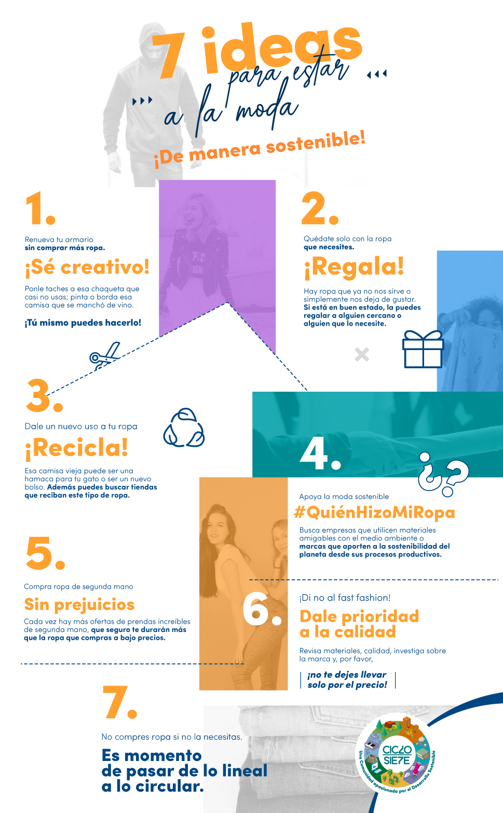

Porque quiero compartir el efecto que tiene la basura textil en nuestras vidas, y como podemos darle un giro de reciclaje. !
Formas de ReciclarHermosa pulsera reciclada Atrevete hacerla :)!!
Elefante para Regalar
La creatividad no tiene limites para Inspirarse!
Muestra de gran Exposicion de telas en Galerias
Hermosas Creaciones con Material Reciclado
Nuevo material Piñatex. Cuero Vegetal hecho de Fibra de Piña
Telas Amigables con el medio Ambiente: Bambú-Algodón orgánico-Seda pacífica-Eco poliéster-Lyocell
● La industria utiliza materias primas no renovables.
● También utiliza una gran cantidad de agua y fertilizantes para cultivar algodón y productos químicos para hacer las telas.
● Miles de millones de microfibras de plástico son vertidas en los océanos debido a los lavados de prendas sintéticas (la ropa libera medio millón de toneladas de microfibras en el océano cada año, lo que equivale a más de 50 mil millones de botellas de plástico).
● Muchos trabajadores fabriles hacen ropa en condiciones peligrosas y tienen sueldos muy bajos.
● Iniciar la búsqueda de nuevos materiales seguros y libres de contaminantes. “La exploración de nuevos materiales, los modelos comerciales pioneros, el aprovechamiento del poder del diseño y escalar mejores tecnologías, unidos para crear una nueva economía textil”.
● Transformar la forma en que se diseña, vende y utiliza la ropa, para terminar con la idea de que es desechable. Incentivar el arriendo de ropa como buena alternativa de negocio (ya existe para los vestidos de fiesta, por ejemplo). Hacer más atractiva la durabilidad, logrando que los clientes puedan valorar la ropa de buena calidad y duradera. políticas a las marcas, esfuerzos coordinados y mayor transparencia.
● Mejorar radicalmente el reciclaje, recolección y reprocesamiento Buscar innovaciones tecnológicas para mejorar la economía y la calidad del reciclaje, para extraer el mayor valor de los materiales. Alinear el proceso de diseño y reciclaje.
● Hacer un uso efectivo de los recursos y apuntar hacia insumos renovables transitar a procesos de producción más eficientes, que generen menos desperdicio (como recortes), menos insumos (combustibles fósiles y productos químicos), reducir el uso del agua en regiones con escasez de agua y utilizar energía renovable.
● Si no lo necesitas, no lo compres. conoce sobre el “minimalismo financiero”
● A veces lo barato cuesta caro. Trata de comprar prendas de buena calidad , que duren harto, para que no terminen en la basura.
● Hereda. Esta es una costumbre muy buena entre algunas familias. Donde los hermanos chicos heredan la ropa de los más grandes o incluso de los primos o amigos. No perdamos esto y que no te de vergüenza preguntarle a tus cercanos si quieren ropa usada en buen estado, ¡siempre es bienvenida!
● Regala. Hay fundaciones que reciben ropa como donaciones, una de ellas el Coaniquem, que incluso tiene tiendas donde venden ropa para ganar dinero ( ir a revisa acá la ubicación de sus tiendas ). También están las tiendas de la fundación De Buena Fe (en Vitacura, Lo Barnechea y Ñuñoa), entre muchas otras alternativas.
● Recicla. Esos calcetines con hoyos o poleras rotas y viejas no los botes. En H&M o en las tiendas Paris, por ejemplo, los reciben para el reciclaje. Incluso te entregan cupones de descuento por hacerlo.
● Vende. Hoy existen varios sitios donde puedes vender la ropa que ya no utilizas como Prilov, Renueva tu Clóset, Feriaferió, por ejemplo. Incluso hay algunos especiales para ropa de niños y guaguas como The Baby Garage, Mom to Mom y Quedó Chico.
● Bueno, y aunque suene obvio: intenta no dejarte llevar por las modas de temporada. A veces encontramos en las tiendas, ropa que claramente la próxima temporada estará out.